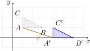
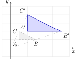
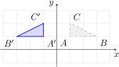
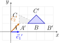
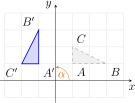
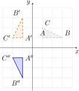
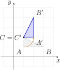
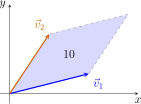

Matrices en determinanten
I Matrices
1 Definitie
Een \(m\times n\)-matrix \(A\) is een rechthoekige tabel van \(m\cdot n\) reële getallen, bestaande uit \(m\) rijen en \(n\) kolommen. Algemeen:
\[ A=\bigl (a_{ij}\bigr )_{m\times n}= \begin {pmatrix} a_{11} & a_{12} & a_{13} & \cdots & a_{1n}\\ a_{21} & a_{22} & a_{23} & \cdots & a_{2n}\\ \vdots &
\vdots & \vdots & \ddots & \vdots \\ a_{m1} & a_{m2} & a_{m3} & \cdots & a_{mn} \end {pmatrix}. \]
De elementen \(a_{ij}\) worden voorzien van dubbele indices. De eerste index \(i\) wijst het rangnummer van de rij aan, de tweede index \(j\) het rangnummer van de kolom. Aldus staat \(a_{23}\) op de tweede rij en in de derde kolom.
De verzameling van alle \(m\times n\)-matrices met reële elementen wordt voorgesteld door \(\R ^{m\times n}\). We noemen \(m\times n\) de orde van de matrix (ook de dimensie genoemd).
Voorbeeld
\[ A=\begin {pmatrix}2&-1&5\\0&3&-4\end {pmatrix}\qquad B=\begin {pmatrix}7&-2\\1&4\\-3&0\end {pmatrix}\qquad C=\begin {pmatrix}-5&8&0&2\end {pmatrix} \]
Hier is \(A\in \R ^{2\times 3}\), \(B\in \R ^{3\times 2}\) en \(C\in \R ^{1\times 4}\).
2 Gelijke matrices
Definitie
Twee matrices \(A\) en \(B\) heten gelijk als en slechts als
-
• ze dezelfde orde hebben, en
-
• hun overeenkomstige elementen gelijk zijn.
Met \(A=(a_{ij})\) en \(B=(b_{ij})\) geldt dus:
\[ A=B \iff \bigl (\,a_{ij}=b_{ij}\ \text {voor alle } i=1,\ldots ,m,\ j=1,\ldots ,n\,\bigr ). \]
Oefeningen
Oefening 1
Bereken \(x,y,z\) als
\[ \begin {pmatrix} x & 3\\ -1 & 2z \end {pmatrix} = \begin {pmatrix} 5 & y+1\\ -1 & 8 \end {pmatrix} \]
Vergelijk de overeenkomstige elementen:
\[ \begin {aligned} x&=5 &(1)\\ 3&=y+1 &(2)\\ 2z&=8 &(3) \end {aligned} \]
Uit (2) volgt \(y=2\) en uit (3) volgt \(z=4\).
Besluit: \(\boxed {x=5,\ y=2,\ z=4}\).
Oefening 2
Bereken \(x,y,z\) als
\[ \begin {pmatrix} 4 & x\\ y^{2} & 0 \end {pmatrix} = \begin {pmatrix} x^{2} & y+5z\\ 2x+5 & x+y+z \end {pmatrix} \]
Vergelijk de overeenkomstige elementen:
\[ \begin {aligned} x^2&=4 &(1)\\ y+5z&=x &(2)\\ y^2&=2x+5 &(3)\\ x+y+z&=0 &(4) \end {aligned} \]
Uit (1) volgt \(x=\pm 2\).
Geval \(x=2\). Uit (3): \(y^2=2\cdot 2+5=9\Rightarrow y=\pm 3\). We proberen beide waarden. Telkens halen we \(z\) uit (4) en kijken we of ook (2) klopt.
-
• \(y=3\): uit (4) volgt \(2+3+z=0\), dus \(z=-5\). In (2) staat dan \(3+5\cdot (-5)=-22\), maar dat moet \(x=2\) zijn. Fout.
-
• \(y=-3\): uit (4) volgt \(2-3+z=0\), dus \(z=1\). In (2) staat dan \(-3+5\cdot 1=2\), en dat is inderdaad \(x=2\). Klopt.
Voor \(x=2\) vinden we dus één oplossing: \(y=-3\) en \(z=1\).
Geval \(x=-2\). Uit (3): \(y^2=2(-2)+5=1\Rightarrow y=\pm 1\). We proberen beide waarden. Telkens halen we \(z\) uit (4) en kijken we of ook (2) klopt.
-
• \(y=1\): uit (4) volgt \(-2+1+z=0\), dus \(z=1\). In (2) staat dan \(1+5\cdot 1=6\), maar dat moet \(x=-2\) zijn. Fout.
-
• \(y=-1\): uit (4) volgt \(-2-1+z=0\), dus \(z=3\). In (2) staat dan \(-1+5\cdot 3=14\), maar dat moet \(x=-2\) zijn. Fout.
Geen enkele keuze voldoet aan de vier vergelijkingen tegelijk. Voor \(x=-2\) is er dus geen oplossing.
Samengevat: (1), (3) en (4) kloppen voor elke kandidaat, enkel (2) beslist.
\[ \begin {array}{rrr|c|c} x & y & z & y+5z & y+5z=x\,?\\ \hline 2 & 3 & -5 & -22 & \text {nee}\\ 2 & -3 & 1 & 2 & \text {ja}\\ -2 & 1 &
1 & 6 & \text {nee}\\ -2 & -1 & 3 & 14 & \text {nee} \end {array} \]
Besluit: \(\boxed {x=2,\ y=-3,\ z=1}\).
3 Optelling van matrices met dezelfde orde
Definitie
Overeenkomstige elementen worden opgeteld:
\[ (a_{ij})+(b_{ij})=(a_{ij}+b_{ij}). \]
Voor \(A,B\in \R ^{m\times n}\) is \(A+B\in \R ^{m\times n}\).
\[ \begin {pmatrix}3&-2&6\\-1&5&0\end {pmatrix} +\begin {pmatrix}-1&3&2\\0&1&-2\end {pmatrix} =\begin {pmatrix}2&1&8\\-1&6&-2\end {pmatrix} \]
Eigenschappen
Voor alle \(A,B,C\in \R ^{m\times n}\):
-
1. Inwendigheid: \(A+B\in \R ^{m\times n}\).
-
2. Commutativiteit: \(A+B=B+A\).
-
3. Associativiteit: \((A+B)+C=A+(B+C)\).
-
4. De nulmatrix \(O\) is neutraal: \(A+O=A\).
-
5. Voor iedere matrix \(A\) hoort een tegengestelde \(-A\) met \(A+(-A)=O\).
Dus \((\R ^{m\times n},+)\) is een commutatieve groep.
Oefeningen
Oefening 3
Vul de lege plaatsen in.
-
(a) \(\begin {pmatrix} 3 & -1 & 4 \end {pmatrix} + \begin {pmatrix} 2 & 5 & \opl [1cm]{-4} \end {pmatrix} = \begin {pmatrix} 5 & 4 & 0 \end {pmatrix} \)
-
(b) \(\begin {pmatrix} 2 & 0\\ -3 & 5 \end {pmatrix} + \begin {pmatrix} \opl [1cm]{1} & 4\\ 6 & \opl [1cm]{-5} \end {pmatrix} = \begin {pmatrix} 3 & 4\\ 3 & 0 \end {pmatrix} \)
-
(c) \(\begin {pmatrix} 1 & 2\\ 0 & -3\\ 4 & 5 \end {pmatrix} + \begin {pmatrix} \opl [1cm]{3} & -2\\ 7 & \opl [1cm]{3}\\ \opl [1cm]{-4} & 1 \end {pmatrix} = \begin {pmatrix} 4 & 0\\ 7 & 0\\ 0 & 6 \end {pmatrix} \)
-
(d) \(\begin {pmatrix} 1 & 4\\ 2 & -1 \end {pmatrix} + \begin {pmatrix} 3 & 0\\ 1 & 2\\ 5 & -1 \end {pmatrix} = \begin {pmatrix} \opl [2cm]{\text {bestaat niet}} \end {pmatrix} \)
De eerste matrix heeft de orde \(2\times 2\), de tweede de orde \(3\times 2\). Optellen gebeurt element per element, dus daarvoor moeten beide matrices dezelfde orde hebben. Deze som bestaat niet.
-
(e) \(\begin {pmatrix} 5 & -1 & 2\\ 0 & 3 & \opl [1cm]{-2} \end {pmatrix} + \begin {pmatrix} \opl [1cm]{-3} & 4 & 1\\ 6 & \opl [1cm]{-3} & 2 \end {pmatrix} = \begin {pmatrix} 2 & 3 & 3\\ 6 & 0 & 0 \end {pmatrix} \)
4 Vermenigvuldiging van een reëel getal en een matrix
Definitie
Voor \(r\in \R \) en \(A=(a_{ij})\) definiëren we \(rA=(ra_{ij})\) (scalaire vermenigvuldiging).
Voorbeeld
\[ 4\cdot \begin {pmatrix}1&2\\3&4\\5&6\end {pmatrix} =\begin {pmatrix}4&8\\12&16\\20&24\end {pmatrix} \]
Eigenschappen
Voor \(r,s\in \R \) en \(A,B\in \R ^{m\times n}\):
-
1. Inwendigheid: \(rA\in \R ^{m\times n}\).
-
2. Neutraal element: \(1\cdot A=A\).
-
3. Associativiteit: \((rs)A=r(sA)\).
-
4. Distributiviteit t.o.v. matrixoptelling: \(r(A+B)=rA+rB\).
-
5. Distributiviteit t.o.v. scalair optellen: \((r+s)A=rA+sA\).
Bovendien is \((\R ^{m\times n},+)\) een commutatieve groep; besluit: \(\bigl (\R ^{m\times n},\R ,+\bigr )\) is een reële vectorruimte.

Oefeningen
Oefening 4
Bepaal \(r\in \mathbb {R}\) zodat
\[ r\cdot A =r\begin {pmatrix} 1 & 0 & 3\\ -2 & 5 & 4 \end {pmatrix} = \begin {pmatrix} 3 & 0 & 9\\ -6 & 15 & 12 \end {pmatrix}. \]
Uit vergelijking van overeenkomstige elementen volgt
\[ r\cdot 1=3 \;\Rightarrow \; r=3. \]
Controle:
\[ \begin {aligned} r\cdot 0&=0, & r\cdot 3&=9,\\ r\cdot (-2)&=-6, & r\cdot 5&=15, \quad r\cdot 4=12. \end {aligned} \]
Alle vergelijkingen kloppen voor \(r=3\), dus \(r=3\) is de oplossing.
Oefening 5
Vul de lege plaatsen in.
-
(a) \(\begin {pmatrix} 2 & \opl [1cm]{4}\\ \opl [1cm]{5} & 3\\ 4 & 3 \end {pmatrix} +2 \begin {pmatrix} 5 & 1\\ 3 & \opl [1cm]{1}\\ \opl [1cm]{0} & 3 \end {pmatrix} = \begin {pmatrix} \opl [1cm]{12} & 6\\ 11 & 5\\ 4 & \opl [1cm]{9} \end {pmatrix} \)
-
(b) \(\begin {pmatrix} 5 & -1 & 4\\ 0 & 3 & 2 \end {pmatrix} - \begin {pmatrix} 2 & \opl [1cm]{3} & 1\\ \opl [1cm]{6} & 5 & -2 \end {pmatrix} = \begin {pmatrix} 3 & -4 & 3\\ -6 & -2 & \opl [1cm]{4} \end {pmatrix} \)
-
(c) \(3 \begin {pmatrix} 1 & \opl [1cm]{2}\\ -2 & 4 \end {pmatrix} - \begin {pmatrix} 2 & 5\\ \opl [1cm]{-1} & 1 \end {pmatrix} = \begin {pmatrix} 1 & 1\\ -7 & \opl [1cm]{11} \end {pmatrix} \)
-
(d) \(2 \begin {pmatrix} 1 & -2 & \opl [1cm]{2} \end {pmatrix} +3 \begin {pmatrix} 0 & \opl [1cm]{-1} & 1 \end {pmatrix} = \begin {pmatrix} \opl [1cm]{2} & -7 & 7 \end {pmatrix} \)
5 Matrixvermenigvuldiging
Definitie
Zij \(A=(a_{ij})\) een \(m\times p\)-matrix en \(B=(b_{ij})\) een \(p\times n\)-matrix. Het product \(C=AB\) is de \(m\times n\)-matrix met
\[ c_{ij}=\sum _{k=1}^{p} a_{ik}b_{kj}\quad (i=1,\ldots ,m;\ j=1,\ldots ,n). \]
\[ \begin {pmatrix} a_{11}&a_{12}&\cdots &a_{1n}\\ \boxed {a_{i1}}&\boxed {a_{i2}}&\cdots &\boxed {a_{in}}\\ a_{m1}&a_{m2}&\cdots &a_{mn} \end {pmatrix} \cdot \begin {pmatrix} b_{11}&\boxed {b_{1j}}&\cdots &b_{1p}\\ b_{21}&\boxed {b_{2j}}&\cdots &b_{2p}\\ b_{n1}&\boxed {b_{nj}}&\cdots &b_{np} \end {pmatrix} = \begin {pmatrix} c_{11}&c_{1j}&\cdots &c_{1p}\\ c_{i1}&\boxed {c_{ij}}&\cdots &c_{ip}\\ c_{m1}&c_{mj}&\cdots &c_{mp} \end {pmatrix} \]
Voorbeeld
Opmerking
\(AB\) bestaat dan en slechts dan als het aantal kolommen van \(A\) gelijk is aan het aantal rijen van \(B\) (m.a.w. \(p\) is gelijk).
\[ A_{2\times \mathbf {3}}=\begin {pmatrix}2&3&1\\4&2&5\end {pmatrix} \qquad B_{\mathbf {3}\times 2}=\begin {pmatrix}1&-3\\0&1\\2&5\end {pmatrix} \qquad (A\cdot
B)_{2\times 2}=\begin {pmatrix}4&2\\14&15\end {pmatrix} \]
Eigenschappen
Voor matrices van passende orde:
-
1. Associativiteit: \((AB)C=A(BC)\).
-
2. Distributiviteit: \(A(B+C)=AB+AC\) en \((A+B)C=AC+BC\).
-
3. Niet-commutatief in het algemeen: \(AB\neq BA\) in het algemeen.
Voorbeeld (niet-commutativiteit)
\[ \begin {pmatrix}3&-1\\-2&4\end {pmatrix}\cdot \begin {pmatrix}5&0\\1&6\end {pmatrix} =\begin {pmatrix}14&-6\\-6&24\end {pmatrix} \qquad \begin
{pmatrix}5&0\\1&6\end {pmatrix}\cdot \begin {pmatrix}3&-1\\-2&4\end {pmatrix} =\begin {pmatrix}15&-5\\-9&23\end {pmatrix} \]
Nuldelers
In \(\R \) geldt: is een product nul, dan is een van beide factoren nul. Bij matrices gaat dat niet op. Er bestaan matrices \(A\) en \(B\) die zelf niet de nulmatrix zijn, maar waarvan het product wel de nulmatrix \(O\) is (zie Vierkante matrices). We noemen zulke matrices nuldelers:
\[ \begin {pmatrix}1&-1\\1&-1\end {pmatrix} \begin {pmatrix}1&2\\1&2\end {pmatrix} = \begin {pmatrix}0&0\\0&0\end {pmatrix} \]
Uit \(AB=O\) mag je dus niet besluiten dat \(A=O\) of \(B=O\).
Macht van een matrix
Heeft \(A\) evenveel rijen als kolommen, dan kan je ze met zichzelf vermenigvuldigen. Voor \(p\in \N _0\) is de macht \(A^p\) het product van \(p\) factoren \(A\):
\[ A^p=\underbrace {A\cdot A\cdots A}_{p\text { factoren}},\qquad A^1=A. \]
Verder spreken we af dat \(A^0=I_n\), de eenheidsmatrix van dezelfde orde (zie Vierkante matrices). Zo blijft \(A^p\cdot A^q=A^{p+q}\) ook voor \(p=0\) gelden.
Voor een matrix die niet evenveel rijen als kolommen heeft, bestaat \(A^2\) niet: de binnenste afmetingen passen dan niet.
\[ A^p=\underbrace {A\cdot A\cdot A\cdots A}_{p\text { factoren}} \]
Oefeningen
Oefening 6
Als \(A\) een \(p\times q\)-matrix is en \(B\) een \(r\times s\)-matrix, onder welke voorwaarde bestaan \(AB\) en \(BA\)?
Het product van twee matrices \(M_1 M_2\) is enkel gedefinieerd als het aantal kolommen van \(M_1\) gelijk is aan het aantal rijen van \(M_2\).
-
• Voor het product \(AB\): \(A\) is een \(p\times q\)-matrix en \(B\) is een \(r\times s\)-matrix. Het aantal kolommen van \(A\) (\(q\)) moet gelijk zijn aan het aantal rijen van \(B\) (\(r\)). De voorwaarde is dus \(q=r\).
-
• Voor het product \(BA\): \(B\) is een \(r\times s\)-matrix en \(A\) is een \(p\times q\)-matrix. Het aantal kolommen van \(B\) (\(s\)) moet gelijk zijn aan het aantal rijen van \(A\) (\(p\)). De voorwaarde is dus \(s=p\).
Beide producten bestaan dus enkel als aan beide voorwaarden voldaan is: \(q=r\) en \(s=p\).
Oefening 7
Als
\[ A = \begin {pmatrix} 0 & 1 \\ 1 & 0 \\ 2 & 2 \end {pmatrix} \qquad B = \begin {pmatrix} 1 & 2 \\ 3 & 4 \end {pmatrix} \qquad C = \begin {pmatrix} 1 & 0 & 1 \\ 2 & 1 & 3 \end {pmatrix} \]
Bereken dan \(AB,(AB)C,BC,A(BC)\) en verifieer associativiteit.
\[ \begin {aligned} AB &= \begin {pmatrix}3 & 4\\[2pt] 1 & 2\\[2pt] 8 & 12\end {pmatrix},\\[6pt] (AB)C &= \begin {pmatrix} 11 & 4 & 15\\ 5 & 2 & 7\\ 32 & 12 & 44 \end {pmatrix}, \end {aligned}\qquad \begin {aligned} BC &= \begin {pmatrix} 5 & 2 & 7\\ 11 & 4 & 15 \end {pmatrix},\\[6pt] A(BC) &= \begin {pmatrix} 11 & 4 & 15\\ 5 & 2 & 7\\ 32 & 12 & 44 \end {pmatrix}. \end {aligned} \]
Oefening 8
Bereken \(x,y,z\) zodat
\[ \begin {pmatrix} 2 & 1\\ -1 & 3 \end {pmatrix} \begin {pmatrix} x & y\\ 2 & z \end {pmatrix} = \begin {pmatrix} 10 & 1\\ 2 & 17 \end {pmatrix}. \]
\[ \begin {aligned} \begin {pmatrix} 2 & 1\\ -1 & 3 \end {pmatrix} \begin {pmatrix} x & y\\ 2 & z \end {pmatrix} &= \begin {pmatrix} 2x+2 & 2y+z\\ -x+6 & -y+3z \end {pmatrix} = \begin {pmatrix} 10 & 1\\ 2 & 17 \end {pmatrix}. \end {aligned} \]
Vergelijk de overeenkomstige elementen:
\[ \begin {aligned} 2x+2&=10, & 2y+z&=1,\\ -x+6&=2, & -y+3z&=17. \end {aligned} \]
Uit de eerste of derde vergelijking: \(x=4\). Los dan
\[ \begin {aligned} 2y+z&=1,\\ -y+3z&=17 \end {aligned} \]
op. Uit \(2y+z=1\) volgt \(z=1-2y\). Ingevuld in \(-y+3z=17\):
\[ -y+3(1-2y)=17 \;\Rightarrow \; -7y=14 \;\Rightarrow \; y=-2, \]
en dus \(z=1-2(-2)=5\).
\[ \boxed {x=4,\ y=-2,\ z=5} \]
Oefening 9
Bepaal alle \(B\) waarvoor \(AB=BA\) als \(A=\begin {pmatrix}1&2\\3&4\end {pmatrix}. \)
\[ B=\begin {pmatrix}a&b\\[2pt]c&d\end {pmatrix}. \]
\(\seteqnumber{0}{}{0}\)\begin{align*} AB&=\begin{pmatrix}1&2\\[2pt]3&4\end {pmatrix}\!\begin{pmatrix}a&b\\[2pt]c&d\end {pmatrix} =\begin{pmatrix}a+2c&\,b+2d\\[2pt]3a+4c&\,3b+4d\end {pmatrix},\\ BA&=\begin{pmatrix}a&b\\[2pt]c&d\end {pmatrix}\!\begin{pmatrix}1&2\\[2pt]3&4\end {pmatrix} =\begin{pmatrix}a+3b&\,2a+4b\\[2pt]c+3d&\,2c+4d\end {pmatrix}. \end{align*} Uit \(AB=BA\) volgt het stelsel
\[ \begin {cases} a+2c=a+3b\\ b+2d=2a+4b\\ 3a+4c=c+3d\\ 3b+4d=2c+4d \end {cases} \;\Longleftrightarrow \; \begin {cases} 3b=2c\\ d=a+c \end {cases} \]
Neem twee vrije parameters \(x,y\in \mathbb {R}\) en zet
\[ b=2y,\qquad c=3y,\qquad a=x+y,\qquad d=x+4y. \]
Dan is
\[ \boxed { B=\begin {pmatrix}x+y&2y\\[2pt]3y&x+4y\end {pmatrix} } \]
Oefening 10
Bereken voor \(A=\begin {pmatrix}2&-1\\0&3\end {pmatrix}\):
-
(a) \(A^0\)
\(A^0=I_2=\begin {pmatrix}1&0\\0&1\end {pmatrix}\), volgens de afspraak.
-
(b) \(A^2\)
\[ A^2=A\cdot A =\begin {pmatrix}2&-1\\0&3\end {pmatrix}\begin {pmatrix}2&-1\\0&3\end {pmatrix} =\begin {pmatrix}4&-5\\0&9\end {pmatrix}. \]
-
(c) \(A^3\)
\[ A^3=A^2\cdot A =\begin {pmatrix}4&-5\\0&9\end {pmatrix}\begin {pmatrix}2&-1\\0&3\end {pmatrix} =\begin {pmatrix}8&-19\\0&27\end {pmatrix}. \]
Op de hoofddiagonaal staan telkens \(2^p\) en \(3^p\); dat is geen toeval bij een driehoeksmatrix.
Oefening 11
Zoek voor \(A=\begin {pmatrix}1&1\\0&1\end {pmatrix}\) een formule voor \(A^p\) met \(p\in \N \), en bewijs ze.
Bereken eerst enkele machten:
\[ A^2=\begin {pmatrix}1&2\\0&1\end {pmatrix},\qquad A^3=A^2\cdot A=\begin {pmatrix}1&3\\0&1\end {pmatrix}. \]
Het vermoeden is dus
\[ A^p=\begin {pmatrix}1&p\\0&1\end {pmatrix}. \]
Voor \(p=0\) klopt dat: \(A^0=I_2\). Neem aan dat het geldt voor \(p\); dan is
\[ A^{p+1}=A^p\cdot A =\begin {pmatrix}1&p\\0&1\end {pmatrix}\begin {pmatrix}1&1\\0&1\end {pmatrix} =\begin {pmatrix}1&p+1\\0&1\end {pmatrix}, \]
en dus geldt de formule voor elke \(p\in \N \).
6 Getransponeerde matrix
Definitie
De getransponeerde \(A^\T \) van \(A\) verkrijgt men door de rijen van \(A\) als kolommen te schrijven (zonder volgorde te wijzigen). Als
\[ A= \begin {pmatrix} a_{11}&a_{12}&\cdots &a_{1n}\\ a_{21}&a_{22}&\cdots &a_{2n}\\ \vdots &\vdots &\ddots &\vdots \\ a_{m1}&a_{m2}&\cdots &a_{mn} \end {pmatrix}, \quad A^\T = \begin {pmatrix} a_{11}&a_{21}&\cdots &a_{m1}\\ a_{12}&a_{22}&\cdots &a_{m2}\\ \vdots &\vdots &\ddots &\vdots \\ a_{1n}&a_{2n}&\cdots &a_{mn} \end {pmatrix}. \]
Voor \(A\in \R ^{m\times n}\) geldt \(A^\T \in \R ^{n\times m}\).
Voorbeeld
\[ A=\begin {pmatrix}3&7\\-1&2\\0&-3\end {pmatrix} \qquad \Longrightarrow \qquad A^\T =\begin {pmatrix}3&-1&0\\7&2&-3\end {pmatrix} \]
Eigenschappen
Voor matrices \(A, B\) met passende orde en \(r\in \R \) geldt:
-
1. \((A^\T )^\T = A\).
-
2. \((A+B)^\T = A^\T + B^\T \).
-
3. \((rA)^\T = rA^\T \).
-
4. \((AB)^\T = B^\T A^\T \) (opgelet: de volgorde keert om).
\[ A=\begin {pmatrix}1&0\\2&1\\3&4\end {pmatrix}\ (3\times 2) \qquad B=\begin {pmatrix}5\\-5\end {pmatrix}\ (2\times 1) \qquad \Longrightarrow \qquad A\cdot B=\begin
{pmatrix}5\\5\\-5\end {pmatrix}\ (3\times 1) \]
Oefeningen
Oefening 12
Bewijs dat \((AB)^\T =B^\T A^\T \) voor
\[ A=\begin {pmatrix}a&b&c\\ d&e&f\end {pmatrix},\qquad B=\begin {pmatrix}g&h\\ i&j\\ k&l\end {pmatrix}. \]
\begin{align*} AB&= \begin{pmatrix} a&b&c\\ d&e&f \end {pmatrix} \begin{pmatrix} g&h\\ i&j\\ k&l \end {pmatrix} = \begin{pmatrix} ag+bi+ck & ah+bj+cl\\ dg+ei+fk & dh+ej+fl \end {pmatrix},\\[2mm] (AB)^\T &= \begin{pmatrix} ag+bi+ck & dg+ei+fk\\ ah+bj+cl & dh+ej+fl \end {pmatrix}.\\ B^\T A^\T &= \begin{pmatrix} g&i&k\\ h&j&l \end {pmatrix} \begin{pmatrix} a&d\\ b&e\\ c&f \end {pmatrix} = \begin{pmatrix} ag+bi+ck & dg+ei+fk\\ ah+bj+cl & dh+ej+fl \end {pmatrix}. \end{align*}
7 Vierkante matrices
Definitie
Een vierkante matrix heeft evenveel rijen als kolommen (orde \(n\)). De elementen \(a_{ii}\) vormen de hoofddiagonaal (\(i=1,\ldots ,n\)).
\[ \text {in }\mathbb {R}^{3\times 3}:\; \begin {pmatrix} \boxed {3}&0&1\\ 7&\boxed {6}&2\\ 5&2&\boxed {4} \end {pmatrix} \]
Eenheidsmatrix
De eenheidsmatrix van orde \(n\) heeft enen op de hoofddiagonaal en nullen daarbuiten:
\[ I_n= \begin {pmatrix} 1&0&\cdots &0\\ 0&1&\cdots &0\\ \vdots &\vdots &\ddots &\vdots \\ 0&0&\cdots &1 \end {pmatrix},\qquad AI_n=I_nA=A \text { (voor $A$ van orde $n$).} \]
\[ \text {in }\mathbb {R}^{2\times 2}:\; \begin {pmatrix}1&0\\0&1\end {pmatrix} \]
Nulmatrix
De nulmatrix \(O\) heeft overal \(0\) als element. Ze is opslorpend voor het product: \(AO=OA=O\).
\[ \text {in }\mathbb {R}^{3\times 2}:\; \begin {pmatrix}0&0\\0&0\\0&0\end {pmatrix} \qquad \text {in }\mathbb {R}^{4\times 1}:\; \begin {pmatrix}0\\0\\0\\0\end {pmatrix} \qquad
\text {in }\mathbb {R}^{1\times 2}:\; \begin {pmatrix}0&0\end {pmatrix} \]
Diagonaalmatrix
Een diagonaalmatrix is een vierkante matrix die buiten de hoofddiagonaal enkel nullen heeft.
\[ \text {in }\mathbb {R}^{3\times 3}:\; \begin {pmatrix}3&0&0\\0&6&0\\0&0&4\end {pmatrix} \]
Scalaire matrix
Een scalaire matrix is een diagonaalmatrix waarin op de hoofddiagonaal telkens hetzelfde getal staat: \(rI_n\).
\[ \text {in }\mathbb {R}^{3\times 3}:\; \begin {pmatrix}5&0&0\\0&5&0\\0&0&5\end {pmatrix} \]
Driehoeksmatrix
Een bovendriehoeksmatrix heeft onder de hoofddiagonaal enkel nullen, een onderdriehoeksmatrix erboven.
\[ \text {in }\mathbb {R}^{3\times 3}:\; \begin {pmatrix}1&0&0\\2&3&0\\4&5&6\end {pmatrix} \qquad \text {in }\mathbb {R}^{2\times 2}:\; \begin
{pmatrix}-1&3\\0&5\end {pmatrix} \]
Symmetrische matrices
Een vierkante matrix \(A\) heet symmetrisch als \(A^\T =A\), dus als \(a_{ij}=a_{ji}\) voor alle \(i\) en \(j\). De elementen liggen dan twee aan twee gespiegeld over de hoofddiagonaal.
\[ A=\begin {pmatrix}2&1\\1&3\end {pmatrix} \]
Antisymmetrische matrices
Een vierkante matrix \(A\) heet antisymmetrisch als \(A^\T =-A\), dus als \(a_{ji}=-a_{ij}\) voor alle \(i\) en \(j\). Voor \(i=j\) geeft dat \(a_{ii}=-a_{ii}\), en dus staat op de hoofddiagonaal enkel \(0\).
\[ A=\begin {pmatrix}0&2\\-2&0\end {pmatrix} \]
Eigenschappen combineren
Een matrix kan tegelijk aan verschillende van deze eigenschappen voldoen. De eenheidsmatrix is bijvoorbeeld diagonaal, scalair, boven- én onderdriehoekig en symmetrisch. Schakel hieronder eigenschappen in en kijk welke matrix er dan nog overblijft.
\[ \begin {pmatrix} 1&0&0\\ 0&1&0\\ 0&0&1 \end {pmatrix} \]
Oefeningen
Oefening 13
Welk verband bestaat er tussen \(B\) (orde 3) en \(AB\) voor \(A=\begin {pmatrix}1&0&0\\0&k&0\\0&0&1\end {pmatrix}\)?
Zij
\[ B=\begin {pmatrix} b_{11}&b_{12}&b_{13}\\ b_{21}&b_{22}&b_{23}\\ b_{31}&b_{32}&b_{33} \end {pmatrix}. \]
Dan is
\(\seteqnumber{0}{}{0}\)\begin{align*} AB &= \begin{pmatrix} 1&0&0\\ 0&k&0\\ 0&0&1 \end {pmatrix} \begin{pmatrix} b_{11}&b_{12}&b_{13}\\ b_{21}&b_{22}&b_{23}\\ b_{31}&b_{32}&b_{33} \end {pmatrix}\\[2mm] &= \begin{pmatrix} b_{11}&b_{12}&b_{13}\\ k\,b_{21}&k\,b_{22}&k\,b_{23}\\ b_{31}&b_{32}&b_{33} \end {pmatrix}. \end{align*} Verband: \(AB\) ontstaat uit \(B\) door de tweede rij met \(k\) te vermenigvuldigen.
Oefening 14
Welk verband bestaat er tussen \(B\) (orde 3) en \(AB\) voor \(A=\begin {pmatrix}0&1&0\\1&0&0\\0&0&1\end {pmatrix}\)?
Zij
\[ B=\begin {pmatrix} b_{11}&b_{12}&b_{13}\\ b_{21}&b_{22}&b_{23}\\ b_{31}&b_{32}&b_{33} \end {pmatrix}. \]
Dan is
\(\seteqnumber{0}{}{0}\)\begin{align*} AB &= \begin{pmatrix} 0&1&0\\ 1&0&0\\ 0&0&1 \end {pmatrix} \begin{pmatrix} b_{11}&b_{12}&b_{13}\\ b_{21}&b_{22}&b_{23}\\ b_{31}&b_{32}&b_{33} \end {pmatrix}\\[2mm] &= \begin{pmatrix} b_{21}&b_{22}&b_{23}\\ b_{11}&b_{12}&b_{13}\\ b_{31}&b_{32}&b_{33} \end {pmatrix}. \end{align*} Verband: \(AB\) ontstaat uit \(B\) door de eerste en tweede rij met elkaar te verwisselen.
Oefening 15
Vul \(a,b,c,d\in \mathbb {R}\) in zodat de matrix \(M\) symmetrisch is én aan de extra voorwaarden voldoet.
\[ M=\begin {pmatrix} 2 & a & -1\\ b & 3 & c\\ -1 & d & 5 \end {pmatrix},\qquad \text {met }a+b=6\text { en }c+d=8. \]
(Opmerking: \(M\) is symmetrisch \(\iff M^\T =M\).)
Voor \(M^\T =M\) moeten symmetrische elementen gelijk zijn: \(b=a\) en \(d=c\). De extra voorwaarden geven dan
\[ a+b=6 \Rightarrow a=b=3,\qquad c+d=8 \Rightarrow c=d=4. \]
Dus
\[ M=\begin {pmatrix} 2&3&-1\\[2pt] 3&3&4\\[2pt] -1&4&5 \end {pmatrix}. \]
Oefening 16
Vul \(p,q,r,s\in \mathbb {R}\) in zodat de matrix \(N\) antisymmetrisch is en bovendien \(p+r=6\) en \(p-r=2\).
\[ N=\begin {pmatrix} 0 & p & 7\\ q & 0 & r\\ -7 & s & 0 \end {pmatrix}. \]
(Opmerking: \(N\) is antisymmetrisch \(\iff N^\T =-N\).)
Voor \(N^\T =-N\) geldt \(q=-p\), \(s=-r\) en de diagonaal is \(0\) (reeds zo). Uit \(p+r=6\) en \(p-r=2\) volgt \(p=4\) en \(r=2\); dus \(q=-4\) en \(s=-2\).
\[ N=\begin {pmatrix} 0&4&7\\[2pt] -4&0&2\\[2pt] -7&-2&0 \end {pmatrix}. \]
Snelle check: \(N^\T =\begin {pmatrix} 0&-4&-7\\ 4&0&-2\\ 7&2&0 \end {pmatrix}=-N. \)
II Transformaties van het vlak
1 Een figuur als matrix
Aanleiding
In een tekenprogramma sleep je een figuur opzij, maak je ze groter of draai je ze een kwartslag. In een computerspel gebeurt dat met elk voorwerp, tientallen keren per seconde. De computer tekent de figuur daarbij niet opnieuw met de hand. Hij bewaart enkel de coördinaten van de hoekpunten en rekent daarmee de nieuwe hoekpunten uit. Dat rekenwerk is matrixrekenen.
Afspraak
We schrijven de coördinaten van elk hoekpunt als een kolom. Een figuur met \(n\) hoekpunten wordt zo een \(2\times n\)-matrix: de eerste rij bevat de \(x\)-coördinaten, de tweede rij de \(y\)-coördinaten. Voor de driehoek met hoekpunten \(A(1,1)\), \(B(3,1)\) en \(C(1,2)\) is dat
\[ F=\begin {pmatrix}1&3&1\\ 1&1&2\end {pmatrix}. \]

Een transformatie voegt aan elk punt \(P\) een punt \(P'\) toe, het beeld van \(P\). Het beeld van de figuur noemen we \(F'\), met hoekpunten \(A'\), \(B'\) en \(C'\). We gebruiken deze driehoek in de hele sectie, zodat je de transformaties met elkaar kunt vergelijken.
2 Verschuiven
Aanleiding
We schuiven de driehoek \(3\) eenheden naar rechts en \(1\) eenheid naar beneden. Elk punt krijgt er dus \(3\) bij in \(x\) en \(-1\) in \(y\). Dat is een som van matrices:
\[ F'=F+T=\begin {pmatrix}1&3&1\\ 1&1&2\end {pmatrix}+\begin {pmatrix}3&3&3\\ -1&-1&-1\end {pmatrix}=\begin {pmatrix}4&6&4\\ 0&0&1\end {pmatrix}. \]
Elke kolom van \(T\) is dezelfde vector \(\vec v=\begin {pmatrix}3\\ -1\end {pmatrix}\): de verschuivingsvector.

Een verschuiving over \(\vec v\) is dus niets anders dan de som van de figuur en een matrix met \(\vec v\) in elke kolom.
3 Schalen
Aanleiding
We maken de driehoek twee keer zo groot: elke coördinaat wordt verdubbeld, \(x'=2x\) en \(y'=2y\). Dat kan met een scalair veelvoud, \(F'=2F\). Maar we kunnen het ook schrijven als een product met een matrix:
\[ \begin {pmatrix}x'\\ y'\end {pmatrix}=\begin {pmatrix}2&0\\ 0&2\end {pmatrix}\begin {pmatrix}x\\ y\end {pmatrix}. \]
Die schrijfwijze is sterker. Ze werkt ook als \(x\) en \(y\) elk een andere factor krijgen, en straks ook voor spiegelen en draaien.
Een transformatie als product
Een transformatie met een \(2\times 2\)-matrix \(M\) stuurt het punt met kolom \(\begin {pmatrix}x\\ y\end {pmatrix}\) naar \(M\begin {pmatrix}x\\ y\end {pmatrix}\). Omdat een matrixproduct kolom per kolom werkt, rekenen we alle hoekpunten in één keer uit:
\[ F'=M\cdot F. \]
Definitie
De schaling met factor \(k\) in de \(x\)-richting en factor \(l\) in de \(y\)-richting heeft als matrix
\[ S=\begin {pmatrix}k&0\\ 0&l\end {pmatrix}. \]
Is \(k=l\), dan behoudt de figuur haar vorm en spreken we van een vergroting of een verkleining. Het centrum is de oorsprong: ook de afstand tot \(O\) wordt met \(k\) vermenigvuldigd.
Voorbeeld
\[ \begin {pmatrix}2&0\\ 0&2\end {pmatrix}\begin {pmatrix}1&3&1\\ 1&1&2\end {pmatrix}=\begin {pmatrix}2&6&2\\ 2&2&4\end {pmatrix} \]

De zijden worden twee keer zo lang, en de driehoek schuift weg van de oorsprong.
4 Spiegelen
Aanleiding
Bij een spiegeling om de \(y\)-as keert het teken van de \(x\)-coördinaat om en blijft de \(y\)-coördinaat: \(x'=-x\) en \(y'=y\). Als product:
\[ \begin {pmatrix}-1&0\\ 0&1\end {pmatrix}\begin {pmatrix}1&3&1\\ 1&1&2\end {pmatrix}=\begin {pmatrix}-1&-3&-1\\ 1&1&2\end {pmatrix}. \]

Vier spiegelingen
\[ \underbrace {\begin {pmatrix}1&0\\ 0&-1\end {pmatrix}}_{\text {om de $x$-as}} \qquad \underbrace {\begin {pmatrix}-1&0\\ 0&1\end {pmatrix}}_{\text {om de $y$-as}} \qquad \underbrace {\begin {pmatrix}0&1\\ 1&0\end {pmatrix}}_{\text {om de rechte $y=x$}} \qquad \underbrace {\begin {pmatrix}0&-1\\ -1&0\end {pmatrix}}_{\text {om de rechte $y=-x$}} \]
De derde matrix wisselt \(x\) en \(y\) van plaats. Dat is dezelfde matrix die bij de oefeningen over vierkante matrices twee rijen van plaats wisselde: hier zijn die rijen de \(x\)- en de \(y\)-coördinaten. De vierde wisselt ze ook, en keert daarbij beide tekens om: \(x'=-y\) en \(y'=-x\).
Opmerking
Loop je de driehoek \(ABC\) rond in de volgorde \(A\), \(B\), \(C\), dan draai je tegen de wijzers van de klok in. Bij \(A'B'C'\) draai je met de wijzers mee. Een spiegeling keert de omloopzin om; verschuiven en schalen met positieve factoren doen dat niet.
Oefeningen
Oefening 17
Bereken het beeld van de driehoek \(F\) en beschrijf wat de transformatie doet.
-
(a) \(M=\begin {pmatrix}3&0\\ 0&0.5\end {pmatrix}\)
\[ \begin {pmatrix}3&0\\ 0&0.5\end {pmatrix}\begin {pmatrix}1&3&1\\ 1&1&2\end {pmatrix}=\begin {pmatrix}3&9&3\\ 0.5&0.5&1\end {pmatrix} \]
De driehoek wordt drie keer zo breed en half zo hoog.
-
(b) \(M=\begin {pmatrix}-1&0\\ 0&-1\end {pmatrix}\)
\[ \begin {pmatrix}-1&0\\ 0&-1\end {pmatrix}\begin {pmatrix}1&3&1\\ 1&1&2\end {pmatrix}=\begin {pmatrix}-1&-3&-1\\ -1&-1&-2\end {pmatrix} \]
Beide coördinaten keren van teken: dat is de puntspiegeling om de oorsprong. Het is ook een schaling met \(k=l=-1\).
-
(c) \(M=\begin {pmatrix}1&0\\ 0&0\end {pmatrix}\)
\[ \begin {pmatrix}1&0\\ 0&0\end {pmatrix}\begin {pmatrix}1&3&1\\ 1&1&2\end {pmatrix}=\begin {pmatrix}1&3&1\\ 0&0&0\end {pmatrix} \]
Elk punt valt loodrecht op de \(x\)-as. De driehoek wordt een lijnstuk van \((1,0)\) tot \((3,0)\): dat is de loodrechte projectie op de \(x\)-as.
5 De kolommen van de matrix
Aanleiding
Hoe vind je de matrix van een transformatie die je enkel in woorden kent? Kijk naar de punten \((1,0)\) en \((0,1)\):
\[ \begin {pmatrix}a&b\\ c&d\end {pmatrix}\begin {pmatrix}1\\ 0\end {pmatrix}=\begin {pmatrix}a\\ c\end {pmatrix} \qquad \text {en}\qquad \begin {pmatrix}a&b\\ c&d\end {pmatrix}\begin {pmatrix}0\\ 1\end {pmatrix}=\begin {pmatrix}b\\ d\end {pmatrix}. \]
Eigenschap
De eerste kolom van \(M\) is het beeld van \(\vec e_1=\begin {pmatrix}1\\ 0\end {pmatrix}\), de tweede kolom het beeld van \(\vec e_2=\begin {pmatrix}0\\ 1\end {pmatrix}\). Ken je die twee beelden, dan ken je de matrix.
Voorbeeld
Bij een afschuiving blijft elk punt op zijn hoogte, maar schuift het naar rechts over een afstand gelijk aan zijn hoogte: \(x'=x+y\) en \(y'=y\). Dan gaat \(\vec e_1\) naar \(\begin {pmatrix}1\\ 0\end {pmatrix}\) en \(\vec e_2\) naar \(\begin {pmatrix}1\\ 1\end {pmatrix}\), zodat
\[ M=\begin {pmatrix}1&1\\ 0&1\end {pmatrix} \qquad \text {en}\qquad M\cdot F=\begin {pmatrix}1&1\\ 0&1\end {pmatrix}\begin {pmatrix}1&3&1\\ 1&1&2\end {pmatrix}=\begin {pmatrix}2&4&3\\ 1&1&2\end {pmatrix}. \]

6 Draaien
Aanleiding
We draaien de driehoek over een hoek \(\alpha \) om de oorsprong, tegen de wijzers van de klok in. Met de vorige eigenschap volstaat het om de beelden van \(\vec e_1\) en \(\vec e_2\) te kennen. Het punt \((1,0)\) ligt op de goniometrische cirkel en komt terecht in \((\cos \alpha ,\sin \alpha )\). Het punt \((0,1)\) ligt een kwartslag verder en komt terecht in \(\bigl (\cos (\alpha +90^\circ ),\sin (\alpha +90^\circ )\bigr )=(-\sin \alpha ,\cos \alpha )\).
Definitie
De draaiing over de hoek \(\alpha \) om de oorsprong heeft als matrix
\[ R_\alpha =\begin {pmatrix}\cos \alpha &-\sin \alpha \\ \sin \alpha &\cos \alpha \end {pmatrix}. \]
Voorbeeld
Voor een kwartslag is \(\cos 90^\circ =0\) en \(\sin 90^\circ =1\):
\[ R_{90^\circ }\cdot F=\begin {pmatrix}0&-1\\ 1&0\end {pmatrix}\begin {pmatrix}1&3&1\\ 1&1&2\end {pmatrix}=\begin {pmatrix}-1&-1&-2\\ 1&3&1\end {pmatrix}. \]

Oefeningen
Oefening 18
-
(a) Geef de matrix van de draaiing over \(180^\circ \) om de oorsprong. Met welke transformatie uit de vorige oefening valt ze samen?
\[ R_{180^\circ }=\begin {pmatrix}\cos 180^\circ &-\sin 180^\circ \\ \sin 180^\circ &\cos 180^\circ \end {pmatrix}=\begin {pmatrix}-1&0\\ 0&-1\end {pmatrix} \]
Dat is de puntspiegeling om de oorsprong.
-
(b) Geef de matrix van de draaiing over \(-90^\circ \) en bereken het beeld van \(F\).
\[ R_{-90^\circ }\cdot F=\begin {pmatrix}0&1\\ -1&0\end {pmatrix}\begin {pmatrix}1&3&1\\ 1&1&2\end {pmatrix}=\begin {pmatrix}1&1&2\\ -1&-3&-1\end {pmatrix} \]
-
(c) Bereken het beeld van \(A(1,1)\) bij de draaiing over \(45^\circ \). Verklaar het resultaat met een tekening.
\[ R_{45^\circ }\begin {pmatrix}1\\ 1\end {pmatrix}=\begin {pmatrix}\frac {\sqrt 2}{2}&-\frac {\sqrt 2}{2}\\ \frac {\sqrt 2}{2}&\frac {\sqrt 2}{2}\end {pmatrix}\begin {pmatrix}1\\ 1\end {pmatrix}=\begin {pmatrix}0\\ \sqrt 2\end {pmatrix} \]
Het punt \(A\) ligt op de rechte \(y=x\), onder \(45^\circ \), op afstand \(\sqrt 2\) van de oorsprong. Na nog eens \(45^\circ \) ligt het op de \(y\)-as, op dezelfde afstand.
7 Transformaties na elkaar
Aanleiding
We draaien de driehoek eerst een kwartslag met \(R=R_{90^\circ }\) en spiegelen het resultaat daarna om de \(x\)-as met \(S=\begin {pmatrix}1&0\\ 0&-1\end {pmatrix}\). Het beeld is \(S\cdot (R\cdot F)\). Omdat het matrixproduct associatief is, is dat hetzelfde als \((S\cdot R)\cdot F\). De twee stappen samen zijn dus één transformatie, met als matrix het product \(S\cdot R\).
Eigenschap
Voer je eerst de transformatie met matrix \(M_1\) uit en daarna die met \(M_2\), dan heeft het geheel als matrix \(M_2\cdot M_1\). Let op de volgorde: de matrix van de eerste stap staat rechts, het dichtst bij \(F\).
Voorbeeld
\[ S\cdot R=\begin {pmatrix}1&0\\ 0&-1\end {pmatrix}\begin {pmatrix}0&-1\\ 1&0\end {pmatrix}=\begin {pmatrix}0&-1\\ -1&0\end {pmatrix} \qquad R\cdot S=\begin {pmatrix}0&-1\\ 1&0\end {pmatrix}\begin {pmatrix}1&0\\ 0&-1\end {pmatrix}=\begin {pmatrix}0&1\\ 1&0\end {pmatrix} \]
Eerst draaien en dan spiegelen geeft de spiegeling om de rechte \(y=-x\). Eerst spiegelen en dan draaien geeft de spiegeling om \(y=x\). Omdat het matrixproduct niet commutatief is, doet de volgorde ertoe.

Oefeningen
Oefening 19
-
(a) Bereken \(R_{90^\circ }\cdot R_{90^\circ }\). Welke draaiing vind je?
\[ \begin {pmatrix}0&-1\\ 1&0\end {pmatrix}\begin {pmatrix}0&-1\\ 1&0\end {pmatrix}=\begin {pmatrix}-1&0\\ 0&-1\end {pmatrix}=R_{180^\circ } \]
Twee kwartslagen na elkaar zijn een halve draai.
-
(b) Wat is \(\left (R_{90^\circ }\right )^4\)? Verklaar zonder te rekenen.
Vier kwartslagen zijn een volledige draai, en dan staat elk punt terug op zijn plaats: \(\left (R_{90^\circ }\right )^4=I_2\).
-
(c) We verdubbelen eerst alle \(x\)-coördinaten en draaien daarna over \(90^\circ \). Geef de matrix van het geheel. Is ze dezelfde als in de omgekeerde volgorde?
Met \(D=\begin {pmatrix}2&0\\ 0&1\end {pmatrix}\) staat de eerste stap rechts:
\[ R_{90^\circ }\cdot D=\begin {pmatrix}0&-1\\ 1&0\end {pmatrix}\begin {pmatrix}2&0\\ 0&1\end {pmatrix}=\begin {pmatrix}0&-1\\ 2&0\end {pmatrix}. \]
In de omgekeerde volgorde:
\[ D\cdot R_{90^\circ }=\begin {pmatrix}2&0\\ 0&1\end {pmatrix}\begin {pmatrix}0&-1\\ 1&0\end {pmatrix}=\begin {pmatrix}0&-2\\ 1&0\end {pmatrix}. \]
De matrices verschillen. Na de draaiing ligt de oude \(x\)-richting verticaal, dus rekt de verdubbeling dan in een andere richting.
8 Verschuiven als product
Aanleiding
Een verschuiving past niet in de vorm \(M\cdot F\). Voor elke \(2\times 2\)-matrix is \(M\begin {pmatrix}0\\ 0\end {pmatrix}=\begin {pmatrix}0\\ 0\end {pmatrix}\): de oorsprong blijft altijd ter plaatse. Toch willen we alles als één product schrijven, zodat een reeks stappen weer één matrix wordt. De oplossing is een extra coördinaat die altijd \(1\) is.
Homogene coördinaten
We schrijven het punt \((x,y)\) als de kolom \(\begin {pmatrix}x\\ y\\ 1\end {pmatrix}\): dat zijn de homogene coördinaten van het punt. Een verschuiving over \(\vec v=\begin {pmatrix}a\\ b\end {pmatrix}\) wordt nu een product:
\[ \begin {pmatrix}1&0&a\\ 0&1&b\\ 0&0&1\end {pmatrix}\begin {pmatrix}x\\ y\\ 1\end {pmatrix}=\begin {pmatrix}x+a\\ y+b\\ 1\end {pmatrix}. \]
Die matrix noemen we \(T_{(a,b)}\). Een \(2\times 2\)-matrix \(M\) krijgt een rij en een kolom erbij: \(M\) linksboven, een \(1\) rechtsonder en verder nullen. Zo wordt de draaiing over \(90^\circ \)
\[ R=\begin {pmatrix}0&-1&0\\ 1&0&0\\ 0&0&1\end {pmatrix}. \]
De figuur krijgt er een rij enen bij: \(F=\begin {pmatrix}1&3&1\\ 1&1&2\\ 1&1&1\end {pmatrix}\).
Voorbeeld: draaien om een ander punt
We draaien de driehoek over \(90^\circ \) om haar hoekpunt \(C(1,2)\) in plaats van om de oorsprong. Dat gaat in drie stappen: verschuif \(C\) naar de oorsprong, draai, en verschuif terug.
\[ T_{(1,2)}\cdot R\cdot T_{(-1,-2)} =\begin {pmatrix}1&0&1\\ 0&1&2\\ 0&0&1\end {pmatrix} \begin {pmatrix}0&-1&0\\ 1&0&0\\ 0&0&1\end {pmatrix} \begin {pmatrix}1&0&-1\\ 0&1&-2\\ 0&0&1\end {pmatrix} =\begin {pmatrix}0&-1&3\\ 1&0&1\\ 0&0&1\end {pmatrix} \]
Het beeld van de driehoek is dan
\[ \begin {pmatrix}0&-1&3\\ 1&0&1\\ 0&0&1\end {pmatrix}\begin {pmatrix}1&3&1\\ 1&1&2\\ 1&1&1\end {pmatrix}=\begin {pmatrix}2&2&1\\ 2&4&2\\ 1&1&1\end {pmatrix}. \]
Het punt \(C\) blijft inderdaad op zijn plaats.

Met homogene coördinaten is elke transformatie uit deze sectie een product met een \(3\times 3\)-matrix, en is een reeks stappen na elkaar opnieuw één matrix.
Oefeningen
Oefening 20
-
(a) Geef de matrix van de verschuiving over \(\vec v=\begin {pmatrix}-2\\ 5\end {pmatrix}\) in homogene coördinaten, en bereken het beeld van \(A(1,1)\).
\[ \begin {pmatrix}1&0&-2\\ 0&1&5\\ 0&0&1\end {pmatrix}\begin {pmatrix}1\\ 1\\ 1\end {pmatrix}=\begin {pmatrix}-1\\ 6\\ 1\end {pmatrix}, \qquad \text {dus }A'(-1,6). \]
-
(b) Stel de matrix op van de spiegeling om de rechte \(y=2\), en bereken het beeld van de driehoek \(F\).
Verschuif de rechte naar de \(x\)-as, spiegel om de \(x\)-as en verschuif terug:
\[ \begin {pmatrix}1&0&0\\ 0&1&2\\ 0&0&1\end {pmatrix} \begin {pmatrix}1&0&0\\ 0&-1&0\\ 0&0&1\end {pmatrix} \begin {pmatrix}1&0&0\\ 0&1&-2\\ 0&0&1\end {pmatrix} =\begin {pmatrix}1&0&0\\ 0&-1&4\\ 0&0&1\end {pmatrix}. \]
Dus \(x'=x\) en \(y'=-y+4\). Het beeld van de driehoek is
\[ \begin {pmatrix}1&0&0\\ 0&-1&4\\ 0&0&1\end {pmatrix}\begin {pmatrix}1&3&1\\ 1&1&2\\ 1&1&1\end {pmatrix}=\begin {pmatrix}1&3&1\\ 3&3&2\\ 1&1&1\end {pmatrix}. \]
Het punt \(C(1,2)\) ligt op de spiegelas en blijft staan.
III Determinanten
1 Determinant van orde 2
Aanleiding
We lossen het stelsel
\[ \begin {cases} a\,x+b\,y=e\\ c\,x+d\,y=f \end {cases} \]
op met de combinatiemethode. Vermenigvuldig de eerste vergelijking met \(d\) en de tweede met \(b\), en trek ze van elkaar af. De termen in \(y\) vallen weg:
\[ (ad-bc)\,x=ed-bf. \]
Het getal \(ad-bc\) beslist over het stelsel. Is het niet nul, dan vinden we precies één waarde voor \(x\), en op dezelfde manier één voor \(y\). Is het nul, dan heeft het stelsel geen of oneindig veel oplossingen. Dat getal hangt enkel af van de coëfficiëntenmatrix \(\begin {pmatrix}a&b\\ c&d\end {pmatrix}\). Het krijgt daarom een eigen naam.
Definitie
De determinant van de \(2\times 2\)-matrix \(A=\begin {pmatrix}a_{11}&a_{12}\\ a_{21}&a_{22}\end {pmatrix}\) is het reëel getal
\[ \det A=|A|=\begin {vmatrix}a_{11}&a_{12}\\ a_{21}&a_{22}\end {vmatrix}=a_{11}a_{22}-a_{12}a_{21}. \]
Het is het product van de hoofddiagonaal min het product van de nevendiagonaal. We spreken van een determinant van de tweede orde. Voor een \(1\times 1\)-matrix \(A=(a)\) is \(\det A=a\).
Let op: de strepen van \(|A|\) zijn geen absolute waarde. Een determinant kan negatief zijn.
Voorbeeld
\[ \begin {vmatrix}2&3\\ 4&5\end {vmatrix}=2\cdot 5-3\cdot 4=-2 \qquad \qquad \begin {vmatrix}3&1\\ 0&2\end {vmatrix}=3\cdot 2-1\cdot 0=6 \]
Meetkundige betekenis
Lees de kolommen van \(A\) als twee vectoren: \(\vec v_1=\begin {pmatrix}a_{11}\\ a_{21}\end {pmatrix}\) en \(\vec v_2=\begin {pmatrix}a_{12}\\ a_{22}\end {pmatrix}\). Samen spannen ze een parallellogram op. De oppervlakte van dat parallellogram is \(|\det A|\). Het teken zegt in welke zin je van \(\vec v_1\) naar \(\vec v_2\) draait: positief tegen de wijzers van de klok in, negatief met de wijzers mee.

\[ \det \begin {pmatrix}4&2\\ 1&3\end {pmatrix}=4\cdot 3-2\cdot 1=10 \]
Waarom dat klopt, zie je het makkelijkst als \(\vec v_1\) op de \(x\)-as ligt. De basis van het parallellogram is dan \(a_{11}\) en de hoogte \(a_{22}\), en inderdaad is \(\det A=a_{11}a_{22}-a_{12}\cdot 0\). Een determinant van orde 2 is dus de georiënteerde oppervlakte van het parallellogram dat de kolommen opspannen.
2 Minor en cofactor
Voor een determinant van orde 3 bouwen we verder op die van orde 2. Zij voortaan
\[ A= \begin {pmatrix} a_{11}&a_{12}&a_{13}\\ a_{21}&a_{22}&a_{23}\\ a_{31}&a_{32}&a_{33} \end {pmatrix}. \]
Definitie
Schrap in \(A\) de rij en de kolom van het element \(a_{ij}\). De determinant van de \(2\times 2\)-matrix die overblijft, is de minor \(M_{ij}\) van \(a_{ij}\). De cofactor van \(a_{ij}\) is die minor met een teken:
\[ A_{ij}=(-1)^{i+j}\,M_{ij}. \]
De som \(i+j\) heet de rang van het element. Is ze even, dan is \(A_{ij}=M_{ij}\). Is ze oneven, dan is \(A_{ij}=-M_{ij}\). De tekens vormen een schaakbord:
\[ \begin {pmatrix} +&-&+\\ -&+&-\\ +&-&+ \end {pmatrix}. \]
Let op het verschil: \(A\) is de matrix, \(A_{ij}\) met twee indices is een getal, de cofactor van \(a_{ij}\).
Voorbeeld
Voor het element \(a_{21}\) schrappen we rij 2 en kolom 1. De rang is \(2+1=3\), oneven, dus
\[ A_{21}=(-1)^{2+1} \begin {vmatrix} a_{12}&a_{13}\\ a_{32}&a_{33} \end {vmatrix} =-\left (a_{12}a_{33}-a_{13}a_{32}\right ). \]
3 Ontwikkeling naar een rij of kolom
Definitie
De determinant van een \(3\times 3\)-matrix is de som van de elementen van een gekozen rij (of kolom), elk vermenigvuldigd met hun cofactor. Bij ontwikkeling naar de eerste rij is dat
\[ \det A=a_{11}A_{11}+a_{12}A_{12}+a_{13}A_{13}. \]
Welke rij of kolom je kiest, maakt voor het resultaat niet uit. Het rekenwerk verschilt wel: een element \(0\) maakt zijn term meteen nul, en dan hoef je die cofactor niet uit te rekenen.
Voorbeeld
Voor de matrix
\[ A=\begin {pmatrix} 3&-2&1\\ 2&1&2\\ 3&2&4 \end {pmatrix} \]
zijn de cofactoren van de eerste rij
\(\seteqnumber{0}{}{0}\)\begin{align*} A_{11} &= (-1)^{1+1} \begin{vmatrix}1&2\\2&4\end {vmatrix} = +(1\cdot 4-2\cdot 2) = 0, \\ A_{12} &= (-1)^{1+2} \begin{vmatrix}2&2\\3&4\end {vmatrix} = -(2\cdot 4-2\cdot 3) = -2, \\ A_{13} &= (-1)^{1+3} \begin{vmatrix}2&1\\3&2\end {vmatrix} = +(2\cdot 2-1\cdot 3) = 1. \end{align*} De determinant is dus
\[ \det A=3\cdot 0 + (-2)\cdot (-2) + 1\cdot 1 = 0+4+1=5. \]
Hoe je ook ontwikkelt, de determinant is telkens dezelfde. Kies daarom de rij of kolom met de meeste nullen.
Oefening
Oefening 21
Bereken de volgende determinant:
\[ \begin {vmatrix}2&-1&0\\3&1&4\\1&0&5\end {vmatrix} \]
We ontwikkelen naar de eerste rij, omdat er een nul in staat.
\(\seteqnumber{0}{}{0}\)\begin{align*} \begin{vmatrix}2&-1&0\\3&1&4\\1&0&5\end {vmatrix} &= 2 \cdot \begin{vmatrix}1&4\\0&5\end {vmatrix} - (-1) \cdot \begin{vmatrix}3&4\\1&5\end {vmatrix} + 0 \cdot \begin{vmatrix}3&1\\1&0\end {vmatrix}\\ &= 2 \cdot (1\cdot 5 - 4\cdot 0) + 1 \cdot (3\cdot 5 - 4\cdot 1) + 0 \\ &= 2 \cdot 5 + 11 \\ &= 21. \end{align*}
4 Regel van Sarrus
Voor een determinant van orde 3 bestaat er een kortere weg. Schrijf de eerste twee kolommen nog eens rechts van de determinant. Vermenigvuldig dan de elementen op elk van de drie dalende diagonalen, en tel die producten op. Trek daarna de producten van de drie stijgende diagonalen af.
\[ \begin {pNiceMatrix}[columns-width=1.1em] a_{11}&a_{12}&a_{13}&a_{11}&a_{12}\\ a_{21}&a_{22}&a_{23}&a_{21}&a_{22}\\ a_{31}&a_{32}&a_{33}&a_{31}&a_{32} \CodeAfter \celpijl {plusc}{1-1}{3-3} \celpijl {plusc}{1-2}{3-4} \celpijl {plusc}{1-3}{3-5} \end {pNiceMatrix} \qquad \begin {pNiceMatrix}[columns-width=1.1em] a_{11}&a_{12}&a_{13}&a_{11}&a_{12}\\ a_{21}&a_{22}&a_{23}&a_{21}&a_{22}\\ a_{31}&a_{32}&a_{33}&a_{31}&a_{32} \CodeAfter \celpijl {minusc}{3-1}{1-3} \celpijl {minusc}{3-2}{1-4} \celpijl {minusc}{3-3}{1-5} \end {pNiceMatrix} \]
\[ \boxed {\; \det A = \bigl (a_{11}a_{22}a_{33}+a_{12}a_{23}a_{31}+a_{13}a_{21}a_{32}\bigr ) - \bigl (a_{13}a_{22}a_{31}+a_{11}a_{23}a_{32}+a_{12}a_{21}a_{33}\bigr ) \;} \]
Ontwikkel je \(\det A\) naar de eerste rij en werk je de haakjes uit, dan vind je dezelfde zes termen.
Opmerking
De regel van Sarrus werkt enkel voor orde 3. Een determinant van orde 4 telt 24 termen, terwijl de diagonalen er maar 8 opleveren. Voor orde 4 en hoger ontwikkelen we naar een rij of kolom: de minoren zijn dan determinanten van orde 3.
Oefening
Oefening 22
Controleer het voorbeeld en de oefening van de vorige paragraaf met de regel van Sarrus.
\begin{align*} \begin{vmatrix}3&-2&1\\2&1&2\\3&2&4\end {vmatrix} &=\bigl (3\cdot 1\cdot 4+(-2)\cdot 2\cdot 3+1\cdot 2\cdot 2\bigr )-\bigl (1\cdot 1\cdot 3+3\cdot 2\cdot 2+(-2)\cdot 2\cdot 4\bigr )\\ &=(12-12+4)-(3+12-16)=4-(-1)=5\\[2mm] \begin{vmatrix}2&-1&0\\3&1&4\\1&0&5\end {vmatrix} &=\bigl (2\cdot 1\cdot 5+(-1)\cdot 4\cdot 1+0\cdot 3\cdot 0\bigr )-\bigl (0\cdot 1\cdot 1+2\cdot 4\cdot 0+(-1)\cdot 3\cdot 5\bigr )\\ &=(10-4+0)-(0+0-15)=6-(-15)=21 \end{align*}
5 Eigenschappen van determinanten
Een determinant van orde 4 rechtstreeks ontwikkelen kost vier determinanten van orde 3. Met de eigenschappen hieronder maken we eerst nullen, zodat er veel minder overblijft. Onderzoek eerst zelf wat een bewerking met de determinant doet.
Eigenschappen
Voor een vierkante matrix \(A\) van orde \(n\) geldt:
-
1. \(\det A=\det A^\T \). Alles wat hieronder voor rijen geldt, geldt dus ook voor kolommen.
-
2. Verwissel je twee rijen, dan verandert het teken van de determinant. Gevolgen:
-
• een determinant met twee gelijke rijen is \(0\);
-
• de som van de producten van de elementen van een rij met de cofactoren van een andere rij is \(0\).
-
-
3. Splits je een rij in een som, dan splitst de determinant mee:
\[ \begin {vmatrix} a_1+a'_1 & b_1 & c_1\\ a_2+a'_2 & b_2 & c_2\\ a_3+a'_3 & b_3 & c_3 \end {vmatrix} = \begin {vmatrix} a_1 & b_1 & c_1\\ a_2 & b_2 & c_2\\ a_3 & b_3 & c_3 \end {vmatrix} + \begin {vmatrix} a'_1 & b_1 & c_1\\ a'_2 & b_2 & c_2\\ a'_3 & b_3 & c_3 \end {vmatrix}. \]
-
4. Vermenigvuldig je één rij met \(k\in \R \), dan wordt de determinant met \(k\) vermenigvuldigd. Gevolgen:
-
• een factor die in een volledige rij voorkomt, mag je voor de determinant zetten;
-
• een determinant met twee evenredige rijen is \(0\);
-
• vermenigvuldig je alle \(n\) rijen met \(k\), dan komt die factor \(n\) keer voor: \(\det (kA)=k^n\det A\).
-
-
5. Tel je bij een rij een veelvoud van een andere rij op, dan blijft de determinant gelijk.
-
6. \(\det (AB)=\det A\cdot \det B\). Voor een som geldt zo’n regel niet: in het algemeen is \(\det (A+B)\neq \det A+\det B\).
Voor orde 2 zie je de eigenschappen ook meetkundig, als oppervlakte van het parallellogram van de kolommen.
Oefening
Oefening 23
Bereken de volgende determinant met de eigenschappen:
\[ \begin {vmatrix}1&2&3\\4&5&6\\7&8&9\end {vmatrix} \]
We passen de kolombewerkingen \(K_2 \leftarrow K_2 - K_1\) en daarna \(K_3 \leftarrow K_3 - K_1\) toe. De waarde van de determinant verandert daardoor niet.
\[ \begin {vmatrix}1&2&3\\4&5&6\\7&8&9\end {vmatrix} \overset {K_2\leftarrow K_2-K_1}{=} \begin {vmatrix}1&1&3\\4&1&6\\7&1&9\end {vmatrix} \overset {K_3\leftarrow K_3-K_1}{=} \begin {vmatrix}1&1&2\\4&1&2\\7&1&2\end {vmatrix}. \]
De derde kolom is nu het dubbele van de tweede. Een determinant met twee evenredige kolommen is nul, dus de determinant is \(0\).
6 Verlaging van de orde
Met eigenschap 5 maken we nullen in een kolom. Staat er in een kolom nog maar één element dat niet nul is, dan blijft er bij ontwikkeling naar die kolom maar één term over. De orde zakt dan met één.
Werkwijze
-
1. Kies een spil: een element dat niet nul is, liefst \(1\) of \(-1\), in een kolom met veel nullen.
-
2. Maak de andere elementen van die kolom nul. Trek daarvoor van elke andere rij een gepast veelvoud van de rij van de spil af. De determinant blijft gelijk.
-
3. Ontwikkel naar die kolom. Enkel de term \(a_{ij}A_{ij}=(-1)^{i+j}\,a_{ij}\,M_{ij}\) blijft over.
-
4. Herhaal met de minor, tot je een determinant van orde 2 overhoudt.
Met een spil \(1\) of \(-1\) blijven alle getallen geheel. Het kan ook met rijen in plaats van kolommen: maak dan nullen in de rij van de spil met kolombewerkingen.
Voorbeeld
In de determinant hieronder is \(a_{23}=1\) een goede spil. We maken de andere elementen van kolom 3 nul met rij 2.
\(\seteqnumber{0}{}{0}\)\begin{align*} \begin{vmatrix} 6&9&2\\ 2&3&1\\ 3&5&2 \end {vmatrix} &= \begin{vmatrix} 2&3&0\\ 2&3&1\\ -1&-1&0 \end {vmatrix} && R_1\leftarrow R_1-2R_2,\ R_3\leftarrow R_3-2R_2 \\ &= (-1)^{2+3}\cdot 1\cdot \begin{vmatrix} 2&3\\ -1&-1 \end {vmatrix} && \text {ontwikkeld naar } K_3 \\ &= -\bigl (2\cdot (-1)-3\cdot (-1)\bigr )=-(-2+3)=-1. \end{align*}
Oefeningen
Oefening 24
Bereken de determinanten met verlaging van de orde.
-
(a) \(\begin {vmatrix} 3 & 2 & 0 \\ 4 & -2 & 1 \\ 1 & 3 & -4 \end {vmatrix}=\opl *{49}\)
-
(b) \(\begin {vmatrix} 2 & 1 & 1 & 3 \\ 0 & 0 & 3 & 1 \\ 2 & 3 & 4 & 1 \\ 1 & 1 & 0 & 1 \end {vmatrix}=\opl *{-5}\)
-
(c) \(\begin {vmatrix} 1 & 0 & 0 & 0 & a \\ 0 & 0 & 0 & a & 1 \\ 0 & 0 & a & 1 & 0 \\ 0 & a & 1 & 0 & 0 \\ a & 1 & 0 & 0 & 0 \end {vmatrix}=\opl *{1+a^5}\)
-
(d) \(\begin {vmatrix} 9 & -5 & 1 \\ 2 & 3 & -1 \\ 1 & -6 & 2 \end {vmatrix}=\opl *{10}\)
-
(e) \(\begin {vmatrix} 8 & 1 & 9 & 1 \\ 6 & 3 & 4 & 5 \\ 5 & 4 & 7 & 2 \\ 2 & 3 & 4 & 1 \end {vmatrix}=\opl *{20}\)
-
(f) \(\begin {vmatrix} a & b & c \\ c & a & b \\ b & c & a \end {vmatrix}=\opl *{a^3+b^3+c^3-3abc}\)
Oefening 25
Toon aan dat
\[ \begin {vmatrix} a & b & ck\\ p & q & rk\\ x & y & zk \end {vmatrix} = \begin {vmatrix} a & b & c\\ p & q & r\\ xk & yk & zk \end {vmatrix}. \]
Noem
\[ D=\begin {vmatrix} a & b & c\\ p & q & r\\ x & y & z \end {vmatrix}. \]
In de linkse determinant bevat de derde kolom overal de factor \(k\). Die mag voor de determinant (eigenschap 4):
\[ \begin {vmatrix} a & b & ck\\ p & q & rk\\ x & y & zk \end {vmatrix} = k \begin {vmatrix} a & b & c\\ p & q & r\\ x & y & z \end {vmatrix} = kD. \]
In de rechtse determinant bevat de derde rij overal de factor \(k\):
\[ \begin {vmatrix} a & b & c\\ p & q & r\\ xk & yk & zk \end {vmatrix} = k \begin {vmatrix} a & b & c\\ p & q & r\\ x & y & z \end {vmatrix} = kD. \]
Beide determinanten zijn dus gelijk aan \(kD\), en bijgevolg aan elkaar.
IV Meetkundige toepassingen
1 Vergelijking van een rechte door twee gegeven punten
Opstelling formule
Rechte door \(P_1(x_1,y_1)\) en \(P_2(x_2,y_2)\) met \(x_1\neq x_2\):
\(\seteqnumber{0}{}{0}\)\begin{align*} y-y_1 &= \frac {y_2-y_1}{x_2-x_1}\,(x-x_1)\\ \Leftrightarrow \quad (y-y_1)(x_2-x_1) &= (y_2-y_1)(x-x_1)\\ \Leftrightarrow \quad y(x_2-x_1)-y_1(x_2-x_1) &= x(y_2-y_1)-x_1(y_2-y_1)\\ \Leftrightarrow \quad x\,(y_1-y_2)\;-\;y\,(x_1-x_2)\;+\;(x_1y_2-x_2y_1) &= 0\\ \Leftrightarrow \quad \colorbox {rowc!35}{$x$}\,(y_1-y_2)\;-\;\colorbox {rowc!35}{$y$}\,(x_1-x_2)\;+\;\colorbox {rowc!35}{$1$}(x_1y_2-x_2y_1) &= 0. \end{align*}
In determinantvorm:
\[ \boxed {\qquad \begin {vNiceMatrix} x & y & 1\\ x_1 & y_1 & 1\\ x_2 & y_2 & 1 \CodeAfter \markeercellen {rowc}{1-1}{1-3} \end {vNiceMatrix}=0 \qquad } \]
Cartesiaanse vergelijking van de rechte door \(P_1(x_1,y_1)\) en \(P_2(x_2,y_2)\)
Voorbeeld
Geef de vergelijking van de rechte door \(P_1(2,3)\) en \(P_2(-4,7)\).
\[ \begin {vmatrix} x & y & 1\\ 2 & 3 & 1\\ -4 & 7 & 1 \end {vmatrix}=0 \]
Uitwerken (ontwikkeling naar de eerste rij):
\(\seteqnumber{0}{}{0}\)\begin{align*} & & x\,(3\cdot 1-1\cdot 7)\;-\;y\,(2\cdot 1-1\cdot (-4))\;+\;1\,(2\cdot 7-3\cdot (-4)) &= 0\\ &\Leftrightarrow \quad & -4x-6y+26 &= 0 \\ &\Leftrightarrow \quad & 2x+3y-13 &= 0 \end{align*}
Een punt \(P(x,y)\) ligt dus op de rechte als de determinant met zijn coördinaten in de eerste rij nul is. Is hij niet nul, dan zegt de absolute waarde nog iets: ze is het dubbele van de oppervlakte van driehoek \(PP_1P_2\). Dat zien we verder bij de oppervlakte van een driehoek.
2 Collineariteit van drie punten
Formule
\[ P_1(x_1,y_1),\; P_2(x_2,y_2),\; P_3(x_3,y_3)\ \text {zijn collineair} \]
\(\seteqnumber{0}{}{0}\)\begin{align*} &\Longleftrightarrow \quad P_1 \in \text {rechte door } P_2P_3\\ &\Longleftrightarrow \quad P_1 \text { voldoet aan } \begin{vmatrix} x & y & 1\\ x_2 & y_2 & 1\\ x_3 & y_3 & 1 \end {vmatrix}=0\\ &\Longleftrightarrow \quad \begin{vmatrix} x_1 & y_1 & 1\\ x_2 & y_2 & 1\\ x_3 & y_3 & 1 \end {vmatrix}=0. \end{align*}
\[ \boxed {\; P_1,P_2,P_3 \text { zijn collineair } \iff \begin {vmatrix} x_1 & y_1 & 1\\ x_2 & y_2 & 1\\ x_3 & y_3 & 1 \end {vmatrix}=0\; } \]
Voorbeeld
Ga na of \(A(3,2)\), \(B(-2,-1)\) en \(C(8,5)\) collineair zijn.
We rekenen de determinant uit met de regel van Sarrus.
\(\seteqnumber{0}{}{0}\)\begin{align*} & & \begin{vmatrix} 3&2&1\\ -2&-1&1\\ 8&5&1 \end {vmatrix} &\weq [?]= 0 \\[6pt] &\Leftrightarrow \quad & \bigl (3\cdot (-1)\cdot 1+2\cdot 1\cdot 8+1\cdot (-2)\cdot 5\bigr ) - \bigl (1\cdot (-1)\cdot 8+3\cdot 1\cdot 5+2\cdot (-2)\cdot 1\bigr ) &\weq [?]{=} 0 \\ &\Leftrightarrow \quad & \bigl (-3+16-10\bigr ) - \bigl (-8+15-4\bigr ) &\weq [?]{=} 0 \\ &\Leftrightarrow \quad & 3 - 3 &\weq [?]{=} 0 \\ &\Leftrightarrow \quad & 0 &\weq {=} 0 \end{align*}
Besluit: ja, de drie punten zijn collineair.
3 Oppervlakte van een \(\Delta \) in een orthonormaal assenstelsel
Opstellen formule
Met \(A(x_1,y_1)\), \(B(x_2,y_2)\) en \(C(x_3,y_3)\) (in een orthonormaal stelsel) geldt:
\(\seteqnumber{0}{}{0}\)\begin{align*} \operatorname {Opp}\triangle ABC &= \tfrac 12 \cdot \text {basis} \cdot \text {hoogte}\\ &= \tfrac 12\,|BC| \cdot d(A,BC)\\ &= \tfrac 12\,|BC| \cdot |AA'|. \end{align*}
Lengtes en lijnvergelijking:
\[ |BC| = \sqrt {(x_3-x_2)^2+(y_3-y_2)^2} \]
\[ BC \leftrightarrow u x + v y + w = 0 \qquad (u, v, w \in \mathbb {R}) \]
Maar de lijn \(BC\) kan ook worden geschreven als
\[BC \leftrightarrow \begin {vmatrix} x&y&1\\ x_2&y_2&1\\ x_3&y_3&1 \end {vmatrix}=0, \]
en dus \(u=y_2-y_3,\quad v=-(x_2-x_3),\quad w=x_2y_3-x_3y_2\).
dan
\(\seteqnumber{0}{}{0}\)\begin{align*} |AA'| &= d(A,BC)\\ &= \dfrac {|u x_1 + v y_1 + w|}{\sqrt {u^2+v^2}}. \end{align*}
Besluit:
\begin{align*} \operatorname {Opp}\triangle ABC &=\tfrac 12\,|BC|\cdot \frac {|u x_1 + v y_1 + w|}{\sqrt {u^2+v^2}}\\[2pt] & =\tfrac 12\,\bigl |u x_1 + v y_1 + w\bigr |\\[2pt] &=\tfrac 12\,\Bigl |x_1(y_2-y_3)+x_2(y_3-y_1)+x_3(y_1-y_2)\Bigr |\\[2pt] & =\tfrac 12\,|\begin{vmatrix} x_1&y_1&1\\ x_2&y_2&1\\ x_3&y_3&1 \end {vmatrix}|. \end{align*}
\[ \boxed {\; \operatorname {Opp}\triangle ABC = \tfrac 12\,|\begin {vmatrix} x_1&y_1&1\\ x_2&y_2&1\\ x_3&y_3&1 \end {vmatrix}| \;} \]
Voorbeeld
Gegeven \(A(1,0)\), \(B(7,2)\), \(C(4,2)\). Bepaal \(\operatorname {Opp}\triangle ABC\).
\(\seteqnumber{0}{}{0}\)\begin{align*} \operatorname {Opp}\triangle ABC &=\frac 12 | \begin{vmatrix} 1&0&1\\ 7&2&1\\ 4&2&1 \end {vmatrix} |\\ &=\frac 12\,\bigl |\,(1\cdot 2\cdot 1+0\cdot 1\cdot 4+1\cdot 7\cdot 2) -(1\cdot 2\cdot 4+1\cdot 1\cdot 2+0\cdot 7\cdot 1)\,\bigr |\\ &=\frac 12\,\bigl |\,(2+0+14)-(8+2+0)\,\bigr |\\ & =\frac 12\,|16-10|\\ & =\boxed {3}. \end{align*} Controle: \(B\) en \(C\) liggen allebei op hoogte \(2\), dus \(|BC|=3\) is een basis. De hoogte vanuit \(A\) is \(2\), en \(\tfrac 12\cdot 3\cdot 2=3\).
Gevolg
De oppervlakte van parallellogram \(ABCD\) met aangrenzende hoekpunten \(A(x_1,y_1)\), \(B(x_2,y_2)\), \(C(x_3,y_3)\) is
\[ \operatorname {Opp}(ABCD)=2\,\operatorname {Opp}\triangle ABC = |\begin {vmatrix} x_1&y_1&1\\ x_2&y_2&1\\ x_3&y_3&1 \end {vmatrix}|. \]